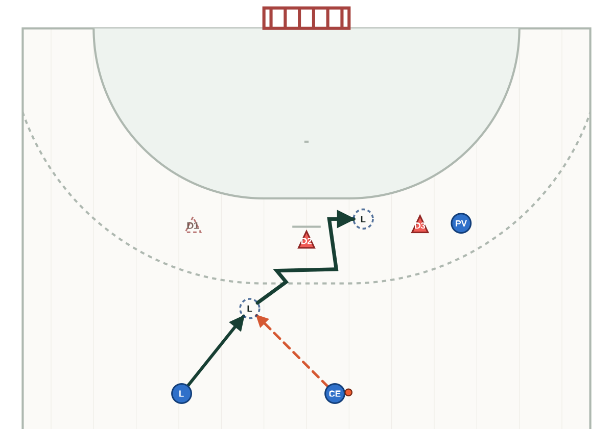

Geometria general v0.3 → v0.4
L'esquerra reprodueix el commit 06b4c88; la dreta mostra la sortida actual del mateix pipeline.
A1 · passada i recepció


B1 és única i la vista conserva només la profunditat útil.
A2 · recepció, finta i 2x1



La finta explicita compromís, trencament, separació i sortida; el delimitador implícit és només contextual.
A3 · costat oposat


La variant oposada conserva les mateixes regles relacionals sense dependre d'IDs o ordre de llistes.